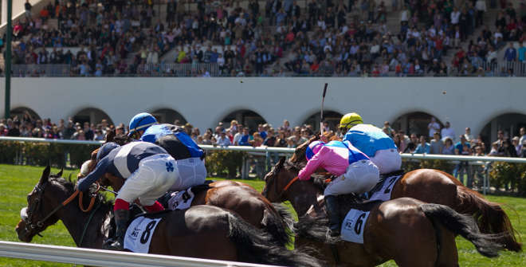

Resultados de La Zarzuela (24/05): Dragon Force y Maximum Scepticism cumplen el pronóstico
La Zarzuela cerró el domingo 24 de mayo una reunión de cinco carreras en la que dos de nuestros favoritos respondieron: Dragon Force se impuso en los debutantes y Maximum Scepticism confirmó su gran momento en el Premio Satrústegui. Repasamos carrera a carrera, con el vídeo oficial de cada una.

C1 · Premio José A. Borrego (12:00 · 1.100 m, 2 años)
Dragon Force (V. Janacek) se llevó la prueba de dos años de punta a punta, justo como apuntábamos. Ánimo Lola fue segunda a 9 cuerpos y Quizás completó el podio.
| Pos. | Caballo | Jockey | Margen |
|---|---|---|---|
| 1º | DRAGON FORCE (IRE) | V. Janacek | — |
| 2º | ANIMO LOLA | R. N. Valle | 9 c |
| 3º | QUIZAS (FR) | J. Gelabert | 2¾ c |
C2 · Premio Abrantes (12:35 · 1.100 m, 3 años)
Sorpresa relativa: Sucking Diesel (J. Gómez), que dábamos como segundo, ganó por delante de Papeleta y Justcallmesergio, ambos a un cuello. Nuestro favorito Cudillero no entró en el podio.
| Pos. | Caballo | Jockey | Margen |
|---|---|---|---|
| 1º | SUCKING DIESEL (IRE) | J. Gómez | — |
| 2º | PAPELETA (IRE) | I. Melgarejo | cuello |
| 3º | JUSTCALLMESERGIO (GB) | R. Sousa | cuello |
C3 · Premio Nouvel An (13:10 · 1.800 m, 3 años)
El Jeque (V. Séguy) se adjudicó el Nouvel An ante The Wiser (cabeza) y nuestro favorito Shy Guy, que fue tercero a medio cuerpo.
| Pos. | Caballo | Jockey | Margen |
|---|---|---|---|
| 1º | EL JEQUE (IRE) | V. Séguy | — |
| 2º | THE WISER (FR) | R. Sousa | cabeza |
| 3º | SHY GUY (GB) | J. Gelabert | ½ c |
C4 · Premio José A. Rodríguez — Hándicap (13:45 · 1.800 m)
En el hándicap se impuso Konfussion (N. de Julián), que situábamos en el podio, por delante de Turronera (1 cuerpo) y de Goodmood, tercero.
| Pos. | Caballo | Jockey | Margen |
|---|---|---|---|
| 1º | KONFUSSION (FR) | N. de Julián | — |
| 2º | TURRONERA (IRE) | I. Melgarejo | 1 c |
| 3º | GOODMOOD (IRE) | J. Gelabert | ¼ c |
C5 · Premio Satrústegui (14:20 · 1.600 m, 3 años, Cat. B)
Cierre redondo para nuestro pronóstico: Maximum Scepticism (J. Gelabert) ganó como esperábamos, con Zodiaco segundo (¾ c) y Sky Rim tercero (½ c).
| Pos. | Caballo | Jockey | Margen |
|---|---|---|---|
| 1º | MAXIMUM SCEPTICISM (IRE) | J. Gelabert | — |
| 2º | ZODIACO (FR) | R. N. Valle | ¾ c |
| 3º | SKY RIM (IRE) | R. Sousa | ½ c |
Crónica de resultados de la redacción de Galope al Día. Vídeos: canal oficial del Hipódromo de la Zarzuela.
— Redacción de Galope al Día